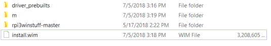
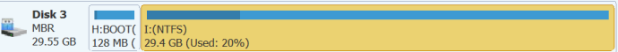

Materials needed:
Windows 10, Build 1703 or later
Tiano 64-Bit UEFI Loader for RPi3 (WoA Debug buils only)
dism, bcdedit, and bcdboot
WoA for Pi can be downloaded using UUP ADGuard which can be found here with the following settings:
Type: Windows (Insider Edition)
Version: Windows 10 Insider Preview 17134.1 (rs4_release) [arm64]
Language: Chose your Language of Preference
Edition: Windows 10 Professional
Type of Download: Download ISO compiler in OneClick! (unZIP -> RUN creatingISO.cmd)
Then click the link to the right of the selection menus that says creatingISO_17134.1_language_arm64_Professional.zip
Unzip the archive that was downloaded and go to the directory it was extracted to. Run the file named
creatingISO.cmd
It will start downloading files for compilation of an ISO. Depending on your download speed, and the speed of your computer, this may take anywhere from half an hour to two hours. Now is a great time to drink a cup of coffee or watch a movie
Open the ISO that was compiled from the compiler in WinRAR or 7Zip and go to the sources directory. Scroll down until you find a file named install.wim (this is not to be confused with boot.wim).
Extract that file to a folder of your chosing. We recommend putting the WIM and all other files in their own folder to keep everything simple.
Here comes the hard part...
There are a series of commands used to do this.
First, open the Command Prompt as administrator. This is important as the commands will not work if you are using the Command Prompt as a normal user.
After that, navigate the the directory that holds the file named install.wim and download the files located on this GitHub repository.
Extract the files to the same folder and copy the folder named driver_prebuilts that is inside the zip you just extracted. Your working folder should look something like this (I will explain "m" soon):
Now that you have the drivers (the drivers are for SD and USB), we have to actually install the drivers. First, make a directory called "m" (to keep it short and simple). After that, go to the Command Prompt you just opened and type in the following case sensitive command:
dism /mount-image /imagefile:install.wim /Index:1 /MountDir:m
Depending on the speed of your computer and hard disk, this may take from 10 seconds to 10 minutes. Eventually, when it finishes, install the drivers with the following command:
dism /image:m /add-driver /driver:driver_prebuilts /recurse /forceunsigned
/forceunsigned tells dism to apply the drivers, even though they have not been signed by an official business.
This process should not take long, usualy under 30 seconds.
Then, run this command to save the modifications to the install.wim file:
dism /unmount-wim /mountdir:m /commit
This will take a little while, 30 minutes at most, but this isn't even the longest part (of the WIM modification process) which is coming up next.
When this process finishes, it's time to actually apply the image. But first, we must format your SD card properly...
First, launch MiniTool. Find your SD card (it will have a box to the side of the drive saying "SD") and delete every partition on it. Before you hit apply, be sure to back up any information you do not want to lose on it. When you have done that, hit apply.
After that, right click the gray bar and press "create new partition". Chose Fat32 and make the size of the partition small, like 128MBs.
Then, create another partition that is formated with NTFS and make it fill the rest of the space of the SD card. It should look something similar to this:
If it does (except for the "used" part because that SD card is actually having Windows 10 installed as we type this), hit the Apply button
Install the Tiano Core 64-bit which can be found here by copying the files in the DEBUG folder to the Fat32 partition. This is a prebuilt version provided by the SparrOS Developer Team.
Depending on the speed of your SD card writer, this may take from 20 minutes to 2 hours.
First, find out which letter the NTFS partition is assigned to. This is very important as using a different letter may overwrite information on another drive!
After figuring that out, use the following command to apply the WIM image to the partition:
dism /apply-image /imagefile:install.wim /index:1 /applydir:[drive letter here]
When this finishes, go to step 7.
The reason why we didn't just upload the WIM to download is because that would be concidered piracy. This was the original plan but at the same time, we would rather not end the day with a lawsuit. We are sorry for any inconvenience this may cause!